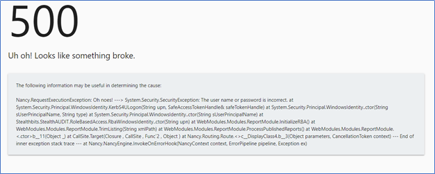
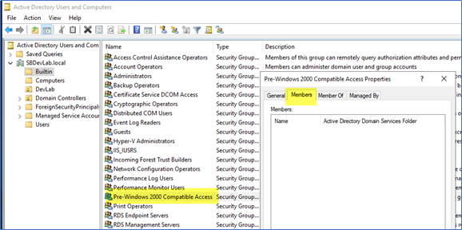

Web server services can be run as local system or domain user, but service needs to read attributes of user & group objects in Active Directory. Web server fails to read attributes if the calling security context that the service runs under, doesn’t have read access to the attributes. When web server service is not able to get value of required attributes then it throws a standard error “The username or password is incorrect” during authentication.
Here is the full error message on the web page:

There were couple of customers who have experienced this issue and resolved it by giving proper permission to security context in AD (SMPC-7508 39365 - Reporting site allows user to authenticate but does not allow viewing of any reports).
There are couple of ways to give read access on user and group objects to security context.
- Ensure the service account or computer system has the following permission within the Active Directory applied at the domain level
- List contents, read all properties, read permissions; Applied to: This object and all descendant objects (has not been confirmed by QA yet).
-
There is a “Pre-Windows 2000 Compatible Access” (backward compatibility) group in Active
Directory and this group has read access on all users and groups in the domain. For more
information, visit
Microsoft support page. To overcome permission issue, add the security context (domain user or SA console)
that service run as, to the Pre-Windows 2000 Compatible Access group.
Below screenshot is showing default group membership and domain user or computer should be added as member of this group.
